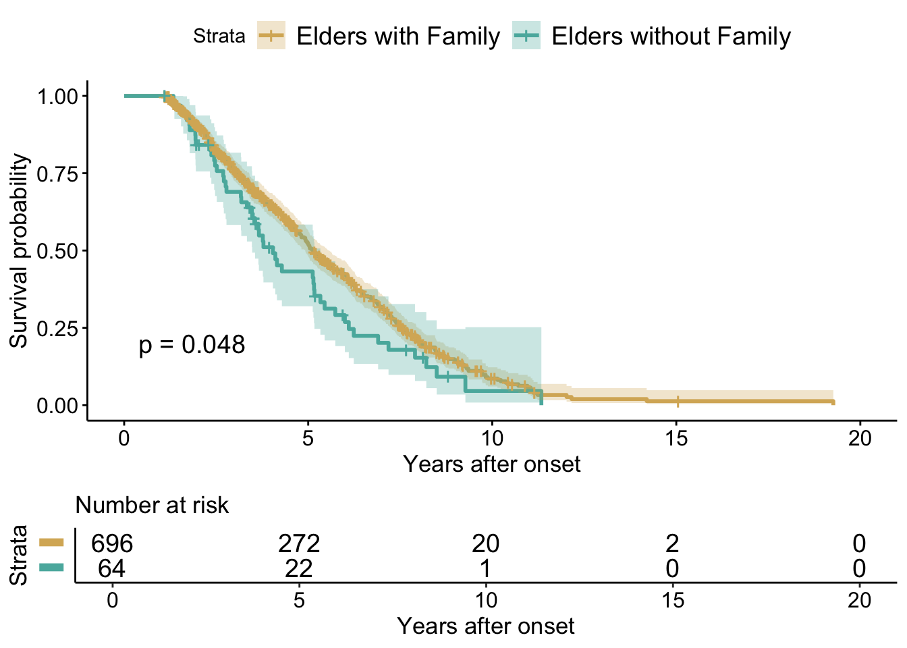
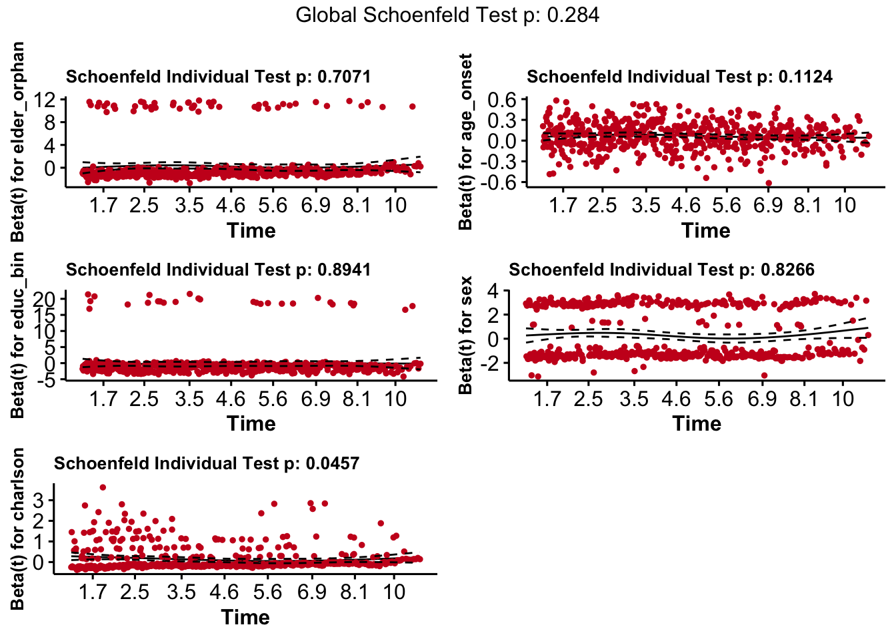
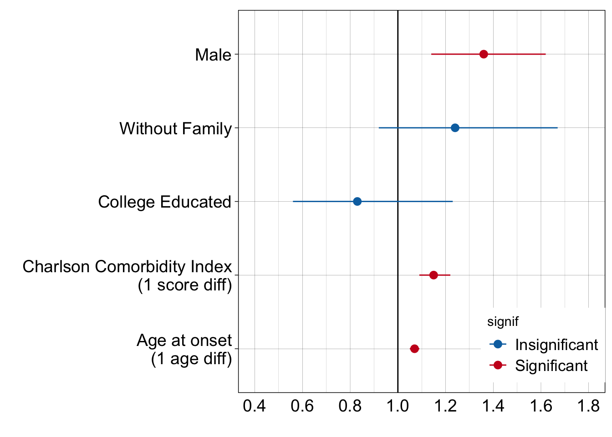

# remove all objects in the environment
rm(list = ls())
# import libraries
library(foreign) # import Stata file
library(haven) # import Stata file
library(tidyverse)
library(survival) # plot survival curves using R base graphs
library(survminer) # plot survival curves using ggplot2
library(RColorBrewer) # for nice colors
library(ggrepel) # labels for ggplot2
library(ggstance) # flipped version of geoms
library(table1) # create table1
library(data.table) # setnames
library(gtsummary) # create summary tables
library(broom.helpers) #coxph+gtsummary
library(labelled) #coxph+gtsummary
# import the data set
adrd_act <- read_dta("adrd_act.dta")Alzheimer’s Disease Research Study
Effect of Family Support on Survival Experience among Elders with Alzheimer’s Disease and Related Dementias (ADRD)
0. Introduction
- An estimated 5.8 million Americans age 65 and older are living with Alzheimer’s disease and related dementias (ADRD) in 2020. Little is known about situations of elders with ADRD who do not have any family support.
Question: Do elders without family live shorter than elders with family among those diagnosed with Alzheimer’s Disease and Related Dementias (ADRD)?
This is a secondary analysis of the Adult Changes in Thought (ACT) study at Kaiser Permanente Washington, the longest-running cohort study examining cognitive health in the United States since 1986.
I assessed survival experience among elders who were diagnosed with ADRD between
2006(when an electronic medical records system was fully in place at Kaiser Permanente Washington, making electronic searching of health records feasible) and2016(the most recent year for which dementia diagnoses have been confirmed at one-year followup as per the ACT study protocol).
| Term | Description |
|---|---|
| Elders | Adults aged older than 65 years |
| Elders with family | Elders who have one or more living spouses or children at the onset of ADRD |
| Elders without family | Elders who do not have any living spouses or children at the onset of ADRD |
1. Data Preparation
1.1. Import a data set
1.2. Check the data set
tibble::glimpse(adrd_act)
# The result is not shown due to confidentiality- 848 observations of 164 variables
1.3. Clean the data set
1.3.1. Select variables needed for analysis
# select variables used for this analysis (164 -> 12 variables)
adrd_act <-
adrd_act %>% select("studyid","bln_flag_dead_asof_30sep2016", "bln_onsetdate", "bln_deathdt", "bln_withdrawdt", "dql_true_elder_orphan", "bln_age_at_onset", "bln_education", "bln_gender", "ein_charlson", "bln_race", "bln_hispanic")
# change column names
adrd_act <-
setnames(adrd_act,
old = c("studyid", "bln_flag_dead_asof_30sep2016", "bln_onsetdate", "bln_deathdt",
"bln_withdrawdt", "dql_true_elder_orphan", "bln_age_at_onset",
"bln_education", "bln_gender", "ein_charlson", "bln_race", "bln_hispanic"),
new = c("studyid", "flag_death", "onset_date", "death_date", "withdraw_date",
"elder_orphan", "age_onset", "education", "sex", "charlson",
"race", "ethnicity"))1.3.2. Check NA values
# count NA in each column
adrd_act_num_na <-
setNames(numeric(ncol(adrd_act)), colnames(adrd_act))
for(i in seq_along(adrd_act)) {
adrd_act_num_na[i] <- sum(is.na(adrd_act[[i]]))
}
adrd_act_num_na # 88 NAs in elder_orphan studyid flag_death onset_date death_date withdraw_date
0 0 0 200 832
elder_orphan age_onset education sex charlson
88 0 0 0 0
race ethnicity
0 0 # remove observations with NA in elder_orphan
na_rem <- !is.na(adrd_act$elder_orphan)
adrd_act <- adrd_act[which(na_rem),]
# 760 observations- There are many NA values in
death_dateandwithdraw_date.death_dateis filled with NA for participants who did not die during the study.withdraw_dateis filled with NA for participants who did not disenroll from the study.
1.3.3. Modify variables
# factorize the variables (elder orphans, sex)
cols = c("elder_orphan", "sex")
adrd_act <- adrd_act %>% mutate_at(cols, funs(factor(.)))
# put labels for levels
adrd_act$elder_orphan <-
factor(adrd_act$elder_orphan,
levels = c(0,1),
labels = c("Elders with family", # reference
"Elders without family"))
# recode the gender variable: 1 = male, 2 = female -> 0 = female, 1 = male (female as ref)
adrd_act$sex <- ifelse(adrd_act$sex == 2, 0, 1)
adrd_act$sex <-
factor(adrd_act$sex,
levels = c(0,1),
labels = c("Female", # reference
"Male"))
# recode the race variable
adrd_act$race_bin <- ifelse(adrd_act$race == 1, 0, 1)
adrd_act$race_bin <-
factor(adrd_act$race_bin,
levels = c(0,1),
labels = c("White", # reference
"Non-White"))
# recode the ethnicity variable
adrd_act$ethnicity_bin <- ifelse(adrd_act$ethnicity == 0, 0, 1)
adrd_act$ethnicity_bin <-
factor(adrd_act$ethnicity_bin,
levels = c(0,1),
labels = c("Non-Hispanic", # reference
"Hispanic"))
# recode the education variable from continuous to binary
adrd_act$educ_bin <- ifelse(adrd_act$education <= 18, 0, 1)
# less than 13 years (= high school graduate or less) = 0
# 13 or more than 13 years (= college or more) = 1
adrd_act$educ_bin <-
factor(adrd_act$educ_bin,
levels = c(0,1),
labels = c("≤18 years", # reference
">18 years"))- Below is a list of variables we will use for our survival analysis.
| Variables | Description |
|---|---|
studyid |
Subject’s study ID |
flag_death |
Whether the subject was dead or not at the end of the study (September 30, 2016) |
| 0 = Alive (active or discontinued), 1 = Dead | |
death_date |
Date of death |
withdraw_date |
Date of discontinuation from the ACT study |
elder_orphan |
Whether the subject had any living family members or not at the onset of ADRD |
| 0 = Had one or more living spouse or child, 1 = Had no living spouse or child | |
age_onset |
Age at the onset of ADRD |
educ_bin |
Years of education completed (0 = 18 or less than 18 years, 1 = More than 18 years) |
| 0 = 18 or less than 18 years, 1 = More than 18 years | |
sex |
Sex at birth |
charlson |
Charlson Comorbidity Index predicts the ten-year mortality for a patient who may have a range of comorbid conditions. |
race_bin |
0 = White, 1 = Non-White |
ethnicity_bin |
0 = Non-Hispanic, 1 = Hispanic |
1.3.4. Create a time variable
- First, we are going to create a variable that indicates how many years each participant lived after the onset of ADRD.
# create a variable for the study end date (Sep 30, 2016)
adrd_act$end_date <- "2016-09-30"
adrd_act$end_date <- as.Date(adrd_act$end_date)
# create the time variable (survival years from the onset)
adrd_act$surv_years <-
ifelse(adrd_act$flag_death == 1,
((adrd_act$death_date - adrd_act$onset_date)/365.25),
NA)
adrd_act$surv_years <-
ifelse(adrd_act$flag_death == 0 & adrd_act$withdraw_date < "2016-10-01",
((adrd_act$withdraw_date - adrd_act$onset_date)/365.25),
adrd_act$surv_years)
adrd_act$surv_years <-
ifelse((adrd_act$flag_death == 0 & is.na(adrd_act$withdraw_date)) | (adrd_act$flag_death == 0 & adrd_act$withdraw_date > "2016-09-30"),
((adrd_act$end_date - adrd_act$onset_date)/365.25),
adrd_act$surv_years)
## 365.25 = the average number of days in a year# check if there is NA values
adrd_act %>% filter(is.na(surv_years)) # no NA# A tibble: 0 × 17
# ℹ 17 variables: studyid <chr>, flag_death <dbl>, onset_date <date>,
# death_date <date>, withdraw_date <date>, elder_orphan <fct>,
# age_onset <dbl>, education <dbl>, sex <fct>, charlson <dbl>, race <dbl>,
# ethnicity <dbl>, race_bin <fct>, ethnicity_bin <fct>, educ_bin <fct>,
# end_date <date>, surv_years <dbl>| Variables | Description |
|---|---|
surv_years |
Living years after the onset of ADRD |
2. Survival Analysis
2.1. Create a Demographic Table
- Now, we have all the variables needed for our analysis. Let’s see the demographics of the dataset.
# add labels to variables
label(adrd_act$surv_years) <- "Years lived after onset"
label(adrd_act$elder_orphan) <- "Family situation"
label(adrd_act$age_onset) <- "Age at onset"
label(adrd_act$race_bin) <- "Race"
label(adrd_act$ethnicity_bin) <- "Ethnicity"
label(adrd_act$sex) <- "Sex at birth"
label(adrd_act$educ_bin) <- "Education"
label(adrd_act$charlson) <- "Charlson Comorbidity Index"
# add units to variables
units(adrd_act$educ_bin) <- "years"
(table1 <- table1(~ surv_years + age_onset + race_bin + ethnicity_bin + sex + educ_bin + charlson | elder_orphan, data = adrd_act))| Elders with family (N=696) |
Elders without family (N=64) |
Overall (N=760) |
|
|---|---|---|---|
| Years lived after onset | |||
| Mean (SD) | 4.64 (2.60) | 4.18 (2.29) | 4.60 (2.58) |
| Median [Min, Max] | 4.14 [1.10, 19.3] | 3.57 [1.11, 11.3] | 4.07 [1.10, 19.3] |
| Age at onset | |||
| Mean (SD) | 85.3 (6.08) | 87.0 (7.03) | 85.5 (6.18) |
| Median [Min, Max] | 86.0 [67.0, 102] | 87.5 [71.0, 103] | 86.0 [67.0, 103] |
| Race | |||
| White | 635 (91.2%) | 55 (85.9%) | 690 (90.8%) |
| Non-White | 61 (8.8%) | 9 (14.1%) | 70 (9.2%) |
| Ethnicity | |||
| Non-Hispanic | 690 (99.1%) | 62 (96.9%) | 752 (98.9%) |
| Hispanic | 6 (0.9%) | 2 (3.1%) | 8 (1.1%) |
| Sex at birth | |||
| Female | 426 (61.2%) | 45 (70.3%) | 471 (62.0%) |
| Male | 270 (38.8%) | 19 (29.7%) | 289 (38.0%) |
| Education (years) | |||
| ≤18 years | 656 (94.3%) | 59 (92.2%) | 715 (94.1%) |
| >18 years | 40 (5.7%) | 5 (7.8%) | 45 (5.9%) |
| Charlson Comorbidity Index | |||
| Mean (SD) | 0.619 (1.41) | 0.344 (0.963) | 0.596 (1.38) |
| Median [Min, Max] | 0 [0, 9.00] | 0 [0, 5.00] | 0 [0, 9.00] |
- Of 760 participants included in the analysis, 696 (91.6%) were those who had one or more living family members at the onset of ADRD. 64 (8.4%) were those with no living family members.
- The mean of survival years after onset was 4.18 years among elders without family, compared with 4.64 years among elders with family.
2.2. Visualize Survival Experience
- Next, we will visualize survival experience comparing elders without family to elders with family. We are going to use the Kaplan-Meier curves.
2.2.1. Create a survival object
- To create a plot for the Kaplan-Meier curves, first we need to create a survival object to use a survival function.
# recode the event variable (has to be numeric or boolean)
adrd_act$flag_death <- as.numeric(adrd_act$flag_death)
# recode the time variable (has to be numeric)
adrd_act$surv_years <- as.numeric(adrd_act$surv_years)
# survival function
adrd_act$tte <- Surv(adrd_act$surv_years, adrd_act$flag_death)
km <- survfit(adrd_act$tte ~ adrd_act$elder_orphan)2.2.2. Plot the Kaplan-Meier Estimator
- The Kaplan-Meier estimator is widely used to estimate a survival function and visualize survival experience in clinical research.
- The below plot compares survival experience among elders without family to elders with family. This plot is NOT accounted for the other explanatory variable than
elder_orphan.
ggsurv <- ggsurvplot(
km,
data = adrd_act,
#surv.median.line = "hv",
#title = "",
#subtittle = "",
surv.plot.height = 1,
size = 1, # change line size
palette =
c("#d8b365","#5ab4ac"),# custom color palettes
conf.int = TRUE, # add confidence interval
pval = TRUE, # add p-value (log-rank test)
#pval.size = 6,
risk.table = TRUE, # add risk table. If you want %, "abs_pct" instead of TRUE
risk.table.fontsize = 5,
risk.table.col = "black", # risk table color by groups = "strata"
risk.table.y.text = FALSE,
risk.table.height = 0.25,
legend.labs =
c("Elders with Family", "Elders without Family"), # change legend labels
xlab = "Years after onset",
ncensor.plot = F,
#ncensor.plot.height = 0.3, # useful to change when you have multiple groups
ggtheme = theme_classic() # change ggplot2 theme
)
# change font sizes for html output
ggsurv$plot <- ggsurv$plot +
theme(legend.text = element_text(size = 14, color = "black"),
axis.text.x = element_text(size = 12, color = "black"),
axis.title.x = element_text(size = 13, color = "black"),
axis.text.y = element_text(size = 12, color = "black"),
axis.title.y = element_text(size = 13, color = "black"))
ggsurv$table <- ggsurv$table +
theme(axis.text.x = element_text(size = 12, color = "black"),
axis.title.x = element_text(size = 13, color = "black"),
axis.title.y = element_text(size = 13, color = "black"))
ggsurv
The above Kaplan-Meier curve represents what the probability of death is at a certain time interval. Time zero is at the onset of ADRD.
The plot shows that the survival probabilities among elders with family are higher than the survival probabilities among elders without family (Log-rank test, p < 0.05).
However, we cannot draw a conclusion yet, as the log-rank test does not account for any confounders.
2.3. Fit a Cox Regression Model
- To adjust for confounding, we are going to fit the Cox proportional-hazards model to the dataset.
2.3.1. Test the Proportional Hazard Assumption
- Before we fit the model, we need to test proportionality. The Cox proportional-hazards model assumes that the hazard functions of the different strata formed by the levels of the covariates are proportional (Proportional Hazard assumption). It is important to assess whether data meet this assumption.
# fit a Cox proportional-hazards model to the dataset
orphan_ph <- coxph(tte ~ elder_orphan + age_onset + educ_bin + sex + charlson, data = adrd_act)
# global goodness-of-fit test
(test_ph <- cox.zph(orphan_ph)) chisq df p
elder_orphan 0.1412 1 0.707
age_onset 2.5200 1 0.112
educ_bin 0.0177 1 0.894
sex 0.0480 1 0.827
charlson 3.9938 1 0.046
GLOBAL 6.2347 5 0.284The output above shows p-values of the global goodness-of-fit test for each explanatory variable. The test is not statistically significant for the explanatory variables, except for Charlson Comorbidity Index (
charlson). The global test is not statistically significant. Therefore, we can assume the proportional hazards.We can also visualize the Schoenfeld residuals for graphical diagnostics.
# plot Schoenfeld residuals
test_ph_plot <- ggcoxzph(test_ph, resid = TRUE, se = TRUE, df = 4, nsmo = 40,
point.col = "#ca0020", point.size = 1, point.shape = 19,
caption = NULL, ggtheme = theme_survminer())
ggpar(
test_ph_plot,
font.title = c(10, "bold", "black"),
font.x = c(12, "bold", "black"),
font.y = c(10, "bold", "black"),
font.tickslab = c(12, "plain"),
)
- From the plots above, we do not find any pattern with time.
2.3.2. Create a Summary Table
As the dataset does not violate the proportional hazards assumption, fitting a Cox proportional-hazards model to this dataset is appropriate.
A Cox proportional-hazards model estimates a hazard rate for individuals, adjusted for confounders. In this study, the hazard rate is the risk or probability of death, given that the participant has lived up to the specific time.
The plot below shows an estimate of the hazard ratio and its 95% confidence interval. The hazard ratio is the ratio of the hazard rate comparing the levels of an explanatory variable.
# fit a Cox proportional-hazards model to the dataset & create a summary table
coxph(tte ~ elder_orphan +
age_onset + educ_bin + sex + charlson, data = adrd_act) %>%
gtsummary::tbl_regression(exp = TRUE)| Characteristic | HR | 95% CI | p-value |
|---|---|---|---|
| Family situation | |||
| Elders with family | — | — | |
| Elders without family | 1.24 | 0.92, 1.67 | 0.15 |
| Age at onset | 1.07 | 1.05, 1.09 | <0.001 |
| Education | |||
| ≤18 years | — | — | |
| >18 years | 0.83 | 0.56, 1.23 | 0.4 |
| Sex at birth | |||
| Female | — | — | |
| Male | 1.36 | 1.14, 1.62 | <0.001 |
| Charlson Comorbidity Index | 1.15 | 1.09, 1.22 | <0.001 |
| Abbreviations: CI = Confidence Interval, HR = Hazard Ratio | |||
- From the plot below, an estimate of the hazard ratio comparing elders without family to elders with family is 1.24. This means that the risk of death among elders without family was estimated to be 24% higher compared to elders with family. However, as the 95% confidence interval crosses 1, there is insufficient evidence to conclude that the survival experience between those two groups are statistically significantly different. There is no difference between the groups.
2.3.3. Create a Ropeladder Plot
- We can also visualize the estimated hazard ratios and its 95% confidence interval. This plot makes it clear to see which hazard ratio is significant and comparte the hazard ratio estimates by explanatory variable.
# load a dataset
sa_rope <- read.csv("survival_analysis_ropeladder_act.csv")
# create a signif variable
sa_rope <- sa_rope %>%
mutate(signif = case_when(
lower > 1 & upper > 1 ~ TRUE, # both bounds are above zero -> TRUE(signif)
lower < 1 & upper < 1 ~ TRUE, # both bounds are below zero -> TRUE(signif)
TRUE ~ FALSE)) # everything else is FALSE(not signif)
sa_rope$signif <- ifelse(sa_rope$signif == TRUE, "Significant", "Insignificant")
# replace TRUE to "Significant", FALSE to "Insignificant"# plot a ropeladder plot
(rope_plot <-
ggplot(sa_rope,
aes(y = covariate, x = hr, xmax = upper, xmin = lower,
shape = signif, fill = signif)) +
geom_vline(xintercept = 1) +
geom_pointrangeh(aes(colour = signif),
position = position_dodge2v(height = 0.7)) +
scale_colour_manual(values = c("#0571b0", "#ca0020")) +
scale_shape_manual(values = c(19, 19)) + #Non-signif-> fillable circle(21)
scale_fill_manual(values = c(NA, NA)) + #Non-signif-> fill it w. white
scale_x_continuous(limits = c(0.4, 1.8),
breaks = c(0.4, 0.6, 0.8, 1.0, 1.2, 1.4, 1.6, 1.8),
sec.axis = sec_axis(~ ., labels = NULL)) +
guides(shape = "none", fill = "none") +
labs(y = "", x = "") +
theme_linedraw() +
#theme_cavis_vgrid + # theme no longer available
theme(legend.position = c(0.83, 0.125),
legend.text = element_text(size = 13),
axis.ticks.x = element_blank(),
axis.text.x = element_text(size=14),
axis.text.y = element_text(size=14)) +
scale_y_discrete(labels = c("sex" = "Male",
"elder_orphans" = "Without Family",
"education_bin" = "College Educated",
"charlson" = "Charlson Comorbidity Index\n(1 score diff)",
"age_onset" = "Age at onset\n(1 age diff)")))
2.3.4. Results
- Of 760 elders with ADRD, 696 (91.6%) were elders who had one or more living spouses or children at the onset of ADRD. 64 (8.4%) were elders who did not have any living spouses or children at the onset of ADRD.
- The hazard of death among elders without family was estimated to be 24% higher compared to elders with family, adjusted for demographic covariates (HR = 1.24; 95% CI = [0.92, 1.67]).
- However, survival experience among elders without family was NOT statistically different from elders with family (Cox PH model, p-value > 0.05).
2.3.5. Limitations
- Limited sample size
- Elders without family (64, 8.4%) vs. with family (696, 91.6%).
- Missing values
- 11.6% of the total 848 participants.
- Family situation change
- Recorded at the onset of ADRD.
- Living situation
- Elders with family – living with them vs. living apart from them.
- Lack of generalizability
- 90% of the participants were non-Hispanic White who have a membership at Kaiser Permanente.
3. Conclusion
This study found that elders without family live as long as elders with family among those diagnosed with ADRD. Future research is needed to gain an understanding of situations and challenges elder orphans face by assessing other health outcomes (i.e. time to nursing home).